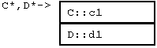
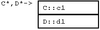

- Declarating a function pointer. Write out the declaration of a function, but with
(*func_name)where you'd normally just putfunc_name - Initializing. Give it the address of a function in your program; the syntax is like any other variable
void my_int_func(int x) {
cout << x << endl;
}
int main() {
void (*foo)(int);
foo = &my_int_func;
}
 
